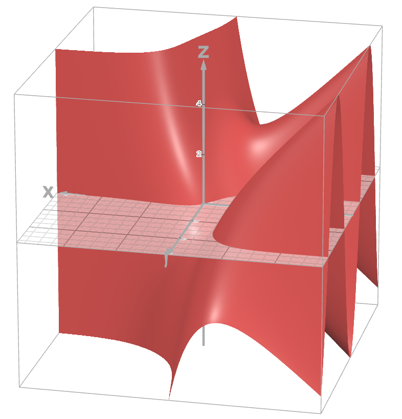
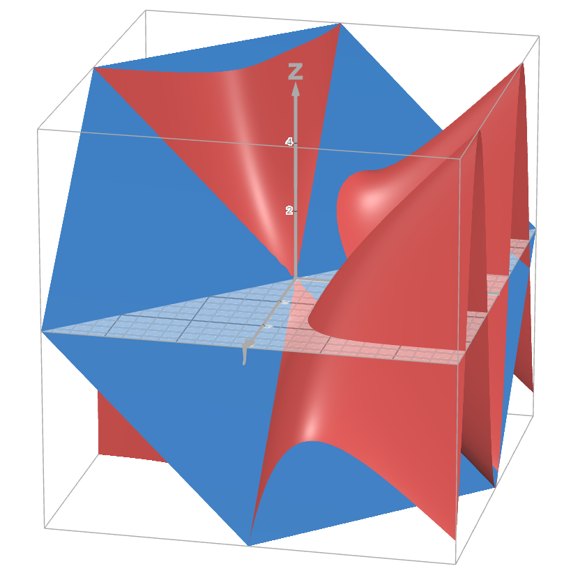
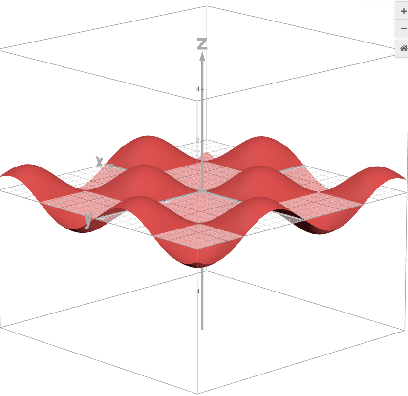
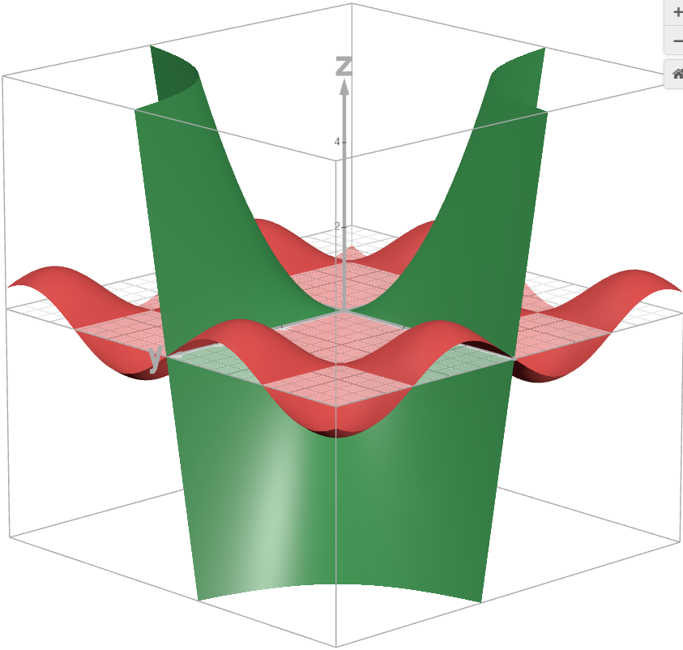
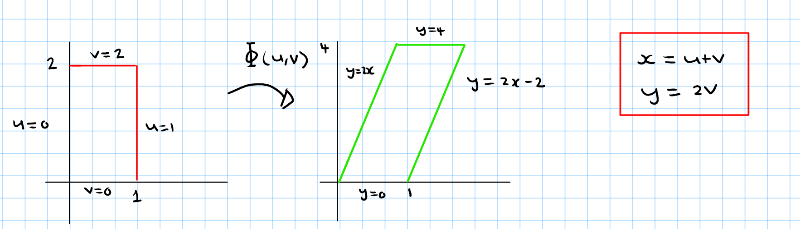
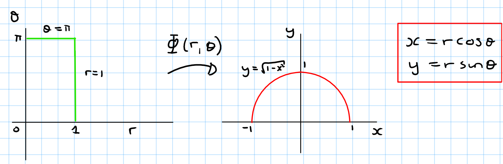

Jonathan Crofts
Nottingham Trent University
Suppose $f(x,y)$ has continuous partial derivatives of order $k+1$ at $(x_0, y_0)$, then we can write the following series expansion
\[ \color{red}{\boxed{\color{white}{ \begin{align*} f(x,y) &= f(x_0,y_0)+f_x(x_0,y_0)(x-x_0)+f_y(x_0,y_0)(y-y_0)\\ &+\frac{1}{2}\left[f_{xx}(x_0,y_0)(x-x_0)^2+2f_{xy}(x_0,y_0)(x-x_0)(y-y_0)f_{yy}(x_0,y_0)(y-y_0)^2\right]\\ &+ \mathrm{remainder} \end{align*} }}} \]This is just the Taylor series of the function $f$ at the point $(x_0,y_0)$
Find the Taylor series about $(0,0)$ of the function
\[ f(x,y) = ye^x \]To start lets compute some derivatives:
\[ \color{red}{\boxed{\color{white}{ \frac{\partial^n f(x,y)}{\partial x^n} = ye^x, \,n\in\mathbb{Z}^+ \quad\text{and}\quad \frac{\partial f(x,y)}{\partial y} = e^x, \,n=1 }}} \]but is otherwise zero (i.e. $\displaystyle \frac{\partial^n f(x,y)}{\partial y^n} = 0, ~n>1$)
The only non-zero mixed derivatives are of the form
\[ \color{red}{\boxed{\color{white}{ \frac{\partial^n}{\partial y\partial x^{n-1}}f(x,y) = e^x, \,n\in\mathbb{Z}^+ }}} \]The Taylor series takes the form
\[ \begin{align*} f(x,y) &= f(0,0) + xf_x(0,0)+yf_y(0,0)+\frac{1}{2!}\big(x^2f_{xx}(0,0)+2xyf_{xy}(0,0)+y^2f_{yy}(0,0)\big)+\cdots\\ &= 0 + x\cdot0+y\cdot 1+\frac{1}{2}\big(x^2\cdot 0+2xy\cdot 1 + y^2\cdot 0\big) + \frac{1}{3!}\big(x^3\cdot 0 +3x^2y\cdot 1+3xy^2\cdot 0+y^3\cdot 0\big)+\cdots\\ &=\color{red}{\boxed{\color{white}{y+xy+\frac{1}{2}x^2y +\frac{1}{6}x^3y+ \mathrm{H.O.T.} }}} \end{align*} \]Find the Taylor series about $(0,0)$ of the function
\[ f(x,y) = e^x\ln(1+y) \]Derivatives wrt $x$ and $y$ (up to second order):
\[ \color{red}{\boxed{\color{white}{ f_x = e^x\ln(1+y),~ f_{xx} = e^x\ln(1+y)\quad\text{and}\quad f_y=\frac{e^x}{1+y},~f_{yy}=\frac{-e^x}{(1+y)^2} }}} \]The mixed second order derivative is $f_{xy}=e^x/(1+y)$ so that
\[ \begin{align*} f(x,y)&= f(0,0)+xf_x(0,0)+yf_y(0,0)+\frac{1}{2!}\Big(x^2f_{xx}(0,0)+2xyf_{xy}(0,0)+y^2f_{yy}(0,0)\Big)+\cdots\\ &= 0 +x\cdot 0+y\cdot 1 +\frac{1}{2}\Big(x^2\cdot 0+2xy\cdot 1 +y^2\cdot(-1)\Big)+\cdots\\ &=\color{#00FF00}{\boxed{\color{white}{y+\frac{1}{2}\Big(2xy-y^2\Big)+\mathrm{H.O.T.}}}} \end{align*} \]We can use Taylor's Theorem to approximate a surface at a given point
The more terms we keep the higher order the approximation
Let's consider the function
\[ f(x,y) = x\cos{y} - ye^x \]A linear approximation of this function is given by
\[ z = f(x,y)\approx x-y \]Geometrically we have:
 In the plot of $f$ and its linear approximation, the approximation looks like a tangent plane at (0,0,0)
The gradient of $f$ at the point $(0, 0, 0)$ is
\[ \begin{align*} \nabla F &= \begin{pmatrix}\cos{y}-ye^e&-x\sin{y}-e^x&-1\end{pmatrix}\Big|_{(0,0,0)}\\ &=\begin{pmatrix}1&-1&-1\end{pmatrix} \end{align*} \]with $F(x,y,z) = f(x,y)-z=0$
We can rewrite the linear approximation as $x-y-z=0$. From this, we immediately see that $\nabla F$ is normal to the plane since
\[ x-y-z = 0 \implies \begin{pmatrix}1\\-1\\-1\end{pmatrix}\cdot\begin{pmatrix}x\\y\\z\end{pmatrix} = 0 \]which is of the form $\mathbf{n}\cdot\mathbf{r} = a$
We can use $\nabla F$ to determine tangent planes and normal lines
Find a second order approximation of the function
\[ h(x,y) = \sin{x}\sin{y} \]valid near the origin
If we retain terms upto and including the quadratic terms our Taylor series is
\[ h(x,y) \approx h(0,0) + \left(xh_x(0,0)+yh_y(0,0)\right) + \frac{1}{2}\left(x^2h_{xx}+2xyh_{xy}+y^2h_{yy}\right) \]with
\[ \color{red}{\boxed{\color{white}{ \begin{align*} h(0,0) &= \sin{x}\sin{y}\left|_{(0,0)}\right. = 0 &h_{xx}(0,0) =-\sin{x}\sin{y}\left|_{(0,0)}\right. = 0\\ h_x(0,0) &= \cos{x}\sin{y}\left|_{(0,0)}\right. = 0 &h_{yy}(0,0) =~~\cos{x}\cos{y}\left|_{(0,0)}\right. = 1\\ h_y(0,0) &= \sin{x}\cos{y}\left|_{(0,0)}\right. = 0 &h_{xy}(0,0) =-\sin{x}\sin{y}\left|_{(0,0)}\right. = 0\\ \end{align*} }}} \]Putting this altogether gives
\[ h(x,y) = \sin{x}\sin{y} = 0 + 0 + \frac{1}{2}\left(x^2\cdot(0) +2xy\cdot(1)+y^2\cdot(0)\right) \]Or
\[ \color{red}{\boxed{\color{white}{ \sin{x}\sin{y}\approx xy }}} \]Geometrically we have:
 Recall that if a region $\mathcal{G}$ in the $uv$-plane is mapped one-to-one into a region $\mathcal{R}$ in the $xy$-plane by equations of the form
\[ x = g(u,v)\qquad y = h(u,v) \]Then any function $f(x,y)$ over $\mathcal{R}$ can be thought of as a function $f(g(u,v), h(u,v))$ over the region $\mathcal{G}$
In this case the integral of $f$ over $\mathcal{R}$ is related to the integral $f(g(u,v), h(u,v))$ over $\mathcal{G}$ as follows
\[ \color{red}{\boxed{\color{white}{ \iint_\mathcal{R} f(x,y)\,\mathrm{d}x\mathrm{d}y = \iint_\mathcal{G}f(g(u,v), h(u,v))|J(u,v)|\,\mathrm{d}u\mathrm{d}v }}} \]Here $J$ is the Jacobian matrix of the transformation
Evaluate
\[ \int_0^4\int_{x=y/2}^{x=(y/2)+1}\frac{2x-y}{2}\,\mathrm{d}x\mathrm{d}y \]by applying the transformation
\[ u = \frac{2x-y}{2},\qquad v=\frac{y}{2} \]To apply the equation over slide we need to sketch the region of integration
Algebra gives:
\[ x = u+v,\qquad y = 2v \] The Jacobian determinant of the transformation is
\[ J(u,v) = \begin{vmatrix}\frac{\partial x}{\partial u}&\frac{\partial x}{\partial v}\\ \frac{\partial y}{\partial x}&\frac{\partial y}{\partial v}\end{vmatrix} = \begin{vmatrix}\frac{\partial}{\partial u}\left(u+v\right)&\frac{\partial}{\partial v}\left(u+v\right)\\ \frac{\partial}{\partial u}\left(2v\right)&\frac{\partial}{\partial v}\left(2v\right)\end{vmatrix} = \begin{vmatrix}1&1\\0&2\end{vmatrix} = 2 \]so that
\[ \begin{align*} \int_0^4\int_{x=y/2}^{x=(y/2)+1}\frac{2x-y}{2}\,\mathrm{d}x\mathrm{d}y &= \int_0^2\int_0^1 u|J(u,v)|\,\mathrm{d}u\mathrm{d}v\\ &=\int_0^2\int_0^1 2u\,\mathrm{d}u\mathrm{d}v\\ &=\color{red}{\boxed{\color{white}{\int_0^2\Big[u^2\Big]_0^1\,\mathrm{d}v = \int_0^2\,\mathrm{d}v = 2}}} \end{align*} \]Evaluate
\[ \iint_\mathcal{R}e^{x^2+y^2}\,\mathrm{d}x\mathrm{d}y \]where $\mathcal{R}$ is the semicircular region bounded by the $x$-axis and and the curve
\[ y=\sqrt{1-x^2} \]In Cartesian coordinates the integral is nonelementary and there is no direct way to integrate $\displaystyle e^{x^2+y^2}$ with respect to either $x$ or $y$
Here, polar coordinates save the day
Recall
\[ \color{red}{\boxed{\color{white}{ x = r\cos{\theta},\quad y=r\sin{\theta}\quad\text{and}\quad \mathrm{d}x\mathrm{d}y = r\mathrm{d}r\mathrm{d}\theta }}} \]The term $r\mathrm{d}r\mathrm{d}\theta$ comes from the Jacobian determinant
\[ |J| = \begin{vmatrix}\frac{\partial}{\partial r}\left(r\cos\theta\right)&\frac{\partial}{\partial \theta}\left(r\cos\theta\right)\\ \frac{\partial}{\partial r}\left(r\sin\theta\right)&\frac{\partial}{\partial \theta}\left(r\sin\theta\right)\end{vmatrix} = \begin{vmatrix}\cos\theta&-r\sin\theta\\\sin\theta&r\cos\theta\end{vmatrix} = r(\cos^2\theta+\sin^2\theta) = r \]and the fact that $\mathrm{d}x\mathrm{d}y = |J|\mathrm{d}r\mathrm{d}\theta$
Thus
\begin{align*} \iint_\mathcal{R}e^{x^2+y^2}\,\mathrm{d}x\mathrm{d}y &=\int_0^\pi\int_0^1 e^{r^2}r\,\mathrm{d}r\mathrm{d}\theta\\ &=\int_0^\pi\Big[\frac{1}{2}e^{r^2}\Big]_0^1\mathrm{d}\theta = \int_0^\pi\frac{1}{2}\Big(e-1\Big)\,\mathrm{d}\theta = \color{red}{\boxed{\color{white}{\frac{\pi}{2}\Big(e-1\Big)}}} \end{align*}The geometry of the problem is as follows
